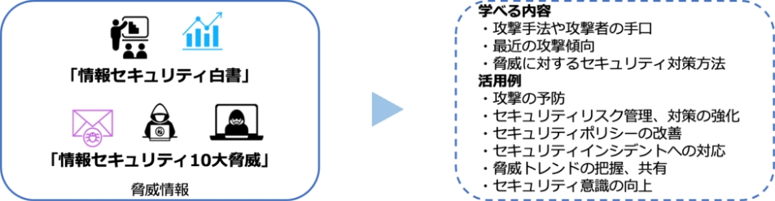
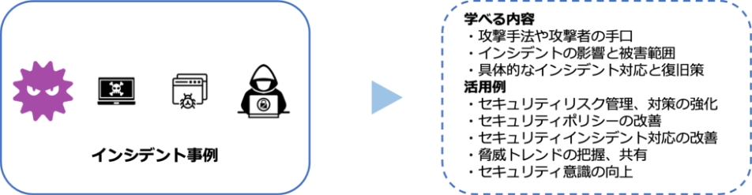

19-2-2. 第2章. 事例を知る：重大なインシデント発生から課題解決まで
- 2-1. 情報セキュリティの概況
- 2-2. 重大インシデント事例から学ぶ課題解決
- 2-3. 実際の被害事例からみるケーススタディ
章の目的
第2章では、近年のサイバー攻撃の傾向や手法を、実際のインシデント事例など通して把握し、それらの脅威に対する対策や、実際にインシデントが発生した場合の対応方法について理解することを目的とします。
主な達成目標
- 近年のサイバー攻撃の傾向や手法を理解すること。
- 実際の被害事例を通して脅威に対する対策や予防方法を理解すること。
- 脅威の検知から、復旧・再発防止処置までの流れを理解すること。
主なキーワード
情報セキュリティ白書、情報セキュリティ10大脅威、ランサムウェア、サプライチェーン攻撃、テレワーク、脅威、インシデント、サイバー被害
要旨
2章の全体概要
情報セキュリティ白書、情報セキュリティ10大脅威、最近のインシデント事例をもとに脅威事例を紹介し、対策や対応方法を説明しています。中でも、ランサムウェアやサプライチェーン攻撃は特に深刻な問題となっています。これらの攻撃は、自社の業務だけでなく取引先からの信用にも悪影響を及ぼす可能性があることに注意する必要があります。近年の攻撃は企業の規模に関係なく行われるため、中小企業にとっても、セキュリティ対策は不可欠なものになっています。
2-1. 情報セキュリティの概況
「情報セキュリティ白書」や「情報セキュリティ10大脅威」を用いて、最新の脅威・脆弱性情報、攻撃の傾向や手法、セキュリティリスクなどを把握し、適切な予防策や対策を講じることが大切です。
図73. 情報セキュリティ白書・情報セキュリティ10大脅威の活用方法
2-2. 重大インシデント事例から学ぶ課題解決
脅威に対する対応策の策定や、現在使用しているリスク戦略の改善、セキュリティ意識を向上させるため、IoTデバイスへの攻撃、サプライチェーンを介した標的型メール攻撃、テレワーク環境での情報漏えい、ランサムウェアへの感染など、過去に発生したさまざまなインシデント事例から、何がうまく行かなかったのか、どのような手段が用いられたのか、どのような脆弱性が攻撃の対象となったのかなどを理解することが大切です。
2-3. 実際の被害事例からみるケーススタディ
実践的な問題解決に役立つスキルを養うため、不正アクセスやランサムウェアのインシデント事例を通じて、被害が起きた原因の分析内容、効果的なセキュリティ対策やベストプラクティスを紹介しています。
図74. インシデント事例を通じて学べる内容
訴求ポイント
章を通した気づき・学び
最新の脅威・脆弱性情報、攻撃の傾向や手法、セキュリティリスクなどを把握し、適切な予防策や対策を講じることが大切です。また、インシデント事例を通して、自社でも起こり得るインシデントに対して適切な対応策を検討し、実施することが大切です。
認識していただきたい実施概要
- 最新の脆弱性や脅威情報、攻撃の傾向や手法からセキュリティリスクを把握し、適切な予防策や対策を講じるためには、情報セキュリティ白書や情報セキュリティ10大脅威を活用することが有効です。
- 脅威に対する対応策の策定や、現在使用しているリスク戦略の改善、セキュリティ意識の向上、今後起こり得るインシデントに対して適切な対応をするためには、過去のインシデント事例から対策方法を学ぶことが有効です。
- セキュリティ対策の必要性を理解するためには、インシデントが発生した原因や、対策・ベストプラクティスを学ぶことが有効です。
実践のために参考となる文献（参考文献）